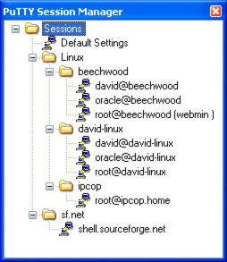

PuTTY Session Manager
PuTTY Session Manager (PSM) is a tool that allows system adminstrators to organise their PuTTY sessions into folders and assign hotkeys to their favourite sessions. This is designed for MS Windows and requires the .NET 2.0 Runtime.
|
 |
| 26-04-2009 | The eigth release of PSM v0.40 is now available on the
Sourceforge
downloads page.
This is a significant release of PSM, with adds a "synchronise sessions" feature. A small number of bugs have been addressed, and the screens re-implemented so that scaling fonts should now work in a sensible fashion. |
| 29-06-2008 | The seventh release of PSM v0.31 is now available on the
Sourceforge
downloads page.
This is a minor release of PSM, with a small number of bug fixes and changes. |
| 13-09-2007 | The sixth release of PSM v0.3 is now available on the
Sourceforge
downloads page.
This is a significant release of PSM, which focuses on enhancing usability. |
| 19-06-2007 | The fifth release of PSM v0.2.3.1 is now available on the
Sourceforge
downloads page.
This version implements Export Sessions to CSV and reordering of folders, and some bug fixes |
| 29-10-2006 | The fourth release of PSM v0.2.2.1 is now available on the
Sourceforge
downloads page.
This version implements a check for update feature, minimize window hotkey and some bug fixes |
| 02-09-2006 | The third release of PSM v0.2.1.1 is now available on the
Sourceforge
downloads page.
This version implements some small feature requests and minor bug fixes |
| 22-07-2006 | The second release of PSM v0.2.0.1 is now available on the
Sourceforge
downloads page.
This version has many new session management features |
| 22-06-2006 | The initial release of PSM v0.1.0.1 is now available on the Sourceforge downloads page. |
Screenshots can be found here.
DocumentationThere is no documentation for this at the moment , although I plan to rectify this as soon as possible!
SupportSubmit support requests to the tracker here, or post a note on one of the discussion forums here.
Installation Requirements- PuTTY. This has been tested with PuTTY v0.58,v0.59 and v0.60.
- .NET Framework 2.0. The windows installer will check your system for the correct version of the framework. It will then prompt you to download and install it, if you don't already have it. Alternatively, download it from Microsoft, and use the zip file for the binaries.
- This has only been tested on Windows XP Professional. I have done limited testing on Vista, which seems to work ok, apart from the session hotkeys (Win 1-9,0 ) have been taken for the system quick launch applications. Update 29-06-2008: This is now addressed in v0.31 - which allows you to choose an alternative modifier (Ctrl+Alt) for hotkeys.
Binaries: PSM is available in a windows installer or a zip file. All
downloads can be found on the
Sourceforge download page.
Source code: The subversion repository can be viewed
here.
Release Notes: The latest release notes can be found
here.
If you want to get the latest source code and build the bleeding edge version, instructions are as follows:
1. Get the project from subversion - you can get subversion here:
http://subversion.tigris.org/
and Tortoise SVN ( a windows client for subversion ) here:
http://tortoisesvn.tigris.org/
2. Set the svn root to be https://puttysm.svn.sourceforge.net/svnroot/puttysm/trunk and do a checkout.
3. If you have Visual Studio 2005, just open the visual studio project
and build the project. You can download Visual Studio C# Express edition
(free) from here:
http://msdn.microsoft.com/vstudio/express/visualcsharp/
If not you can download the Microsoft .NET 2.0 SDK from here:
http://msdn.microsoft.com/netframework/downloads/updates/default.aspx
4. In the root of the svn sandbox, run the "SDK Command Prompt" shortcut
( if it doesn't work , check the properties to ensure that it points
to the location that you installed the SDK to )
From the command prompt, run "buildrelease.bat" - this calls the "msbuild" utility
, which calls the C# compiler.
5. In the svn sandbox - go to PuTTYSessionManager\bin\Release and the compiled exe should be there - you can just run it from that directory.
LicencePuTTY Session Manager is released under the GPL , and makes use of the FileHelpers Library , released under the LGPL.
CreditsDesigned for use with PuTTY by Simon Tatham.
Inspired by QuickPuTTY by Olivier Deckmyn and PLaunch.
Installer uses the Nullsoft Scriptable Install System.
PSM makes grateful use of the FileHelpers Library.
YourKit is kindly supporting open source projects, including PuTTY Session Manager, with its full-featured .NET Profiler. YourKit, LLC is the creator of innovative and intelligent tools for profiling .NET and Java applications. Take a look at YourKit's leading software products: YourKit .NET Profiler and YourKit JavaProfiler.